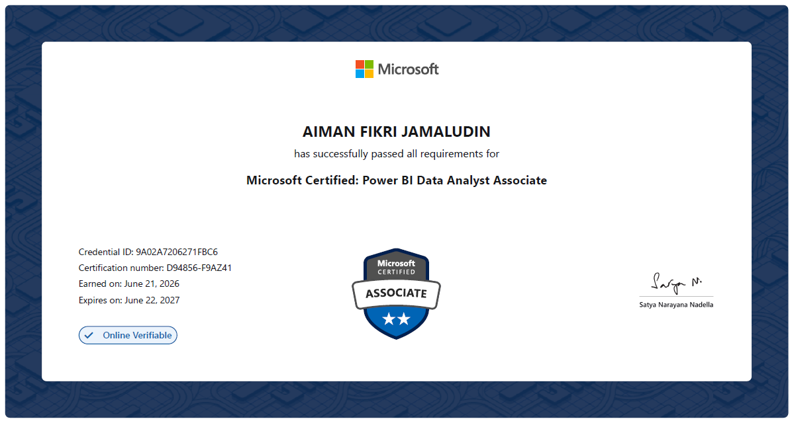

← My Portfolio
Career · Academia · Tech
Portfolio Collections
Browse the three professional pillars from the homepage.
FEATURED TEACHING RESOURCE
Open full site ↗SIR AIMAN SITE
Mathematics learning hub
If the embedded website does not load, open SIR AIMAN SITE directly ↗.
MICROSOFT CERTIFICATION
Microsoft Certified: Power BI Data Analyst Associate

Collection in progress
Selected work and supporting evidence will appear here when ready for public sharing.
Explore all three pillars →